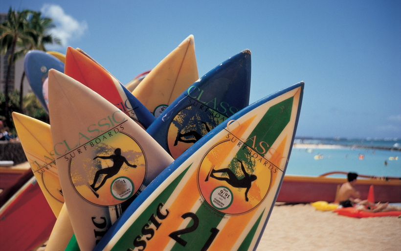

Індонезія
Островом Балі ось уже років десять як не здивуєш росіян, однак від цього він не став менш привабливим. Магічні храми на обриві скель і серед озер, вулкан, періодично хвилюючих місцевих жителів своєю активністю, добродушні балийци, дикі мавпи і смачна індонезійська їжа - якщо ви чули про цей острів, але ніколи тут не були, швидше за все, час прийшов. Беріть квиток на лоукостер ($ 300), бронюйте маленький готель ($ 40), орендуйте скутер ($ 4) і насолоджуйтеся своїм особистим Балі!
Коли настав час планувати відпустку, я вже знала, куди відправлюся на цей раз. Сумнівів не було: лечу в Індонезію і крапка. За останній рік я чула від своїх знайомих кілька захоплених розповідей про відпочинок у цій країні. В голові роєм кружляли питання. Що ж там такого особливого? Чим вона підкорює мандрівників? Чому туди хочеться повернутися знову? Вирішивши, що пора знайти відповіді самій, я почала готуватися до поїздки.
Отже, про все по порядку. Індонезія - це острівна незалежна держава, розташована в Південно-Східній Азії. У його складі більше 18 тисяч островів! Якщо вдуматися, розумієш, що цілого життя не вистачить, щоб побувати на кожному з них. Однак завдання трохи спрощується тим, що лише близько тисячі з цих островів є населеними і мають більш-менш розвинену інфраструктуру.
Я розповім про тих, на які дійсно варто звернути увагу при складанні маршруту. Кожен острів по-своєму унікальний, тому тут все зможуть знайти розвагу до душі: будь то сходження до кратера вулкана на світанку, ковзання по хвилях на серфі або прийняття сонячних ванн на пляжах.
Погода
Для початку слід розібратися, що для вас важливіше: відсутність натовпу туристів або відсутність дощів. Сухий сезон у всій Індонезії вважається період з травня по жовтень.
В цей час дощів практично немає, а якщо і є, то вночі. Швидше за все ви їх навіть і не помітите. У липні і серпні острів переповнений туристами, ціни на квитки і готелі, відповідно, злітають в кілька разів.
У листопаді погода трохи змінюється, і починаються дощі. Потік туристів в цей час знижується, і приїхати в Індонезію стає простіше. Така погода тримається в середньому до березня.
Якщо для вас пляж не головне, то цей час буде найбільш підходящим для поїздки. Високу температуру повітря трохи охолоджують дощі. Місцеві дуже чекають цього часу, оскільки з'являється довгоочікувана прохолода.
Однак в середньому температура повітря на території Індонезії протягом усього року становить + 28-32 ° C, різких перепадів тут не буває.